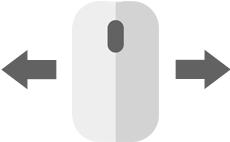
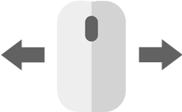

CONTROLS
|  | |
|
Press space button to start the game or round. |
Use mouse to control the paddle. |
Arkanoid (アルカノイド Arukanoido) is an arcade game developed by Taito in 1986. It expanded upon Atari's Breakout games of the 1970s by adding power-ups, different types of bricks, a variety of level layouts, and visual layering and depth. The title refers to a doomed "mothership" from which the player's ship, the Vaus, escapes. Arkanoid revived the Breakout concept, resulting in many clones and similar games for home computers, even over a decade later.
|  | |
|
Press space button to start the game or round. |
Use mouse to control the paddle. |
Game by
Wramble